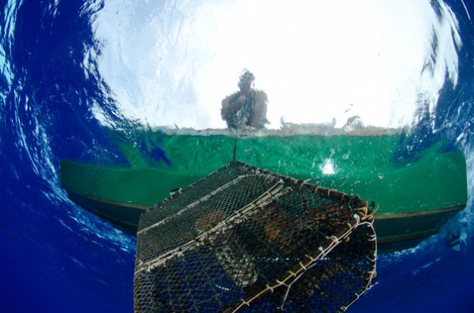
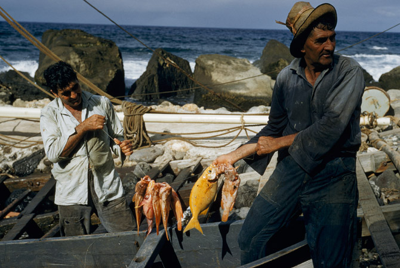
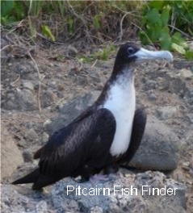

- Fishing
-
The Island is surrounded by an exclusive economic zone of over 836,000 square kilometres, which hosts one of the best-preserved marine ecosystems on the planet. With growing threats from industrial fishing and climate change, the Pitcairn islanders, together with the Pew Charitable Trust Global Ocean Legacy, have been working on establishing a large scale marine reserve within their waters.
In September 2012, the Pitcairn community, with Pew, National Geographic (both IUCN Members) and the Pitcairn Council, presented a joint proposal to the UK government for the creation of the world's largest fully protected marine reserve. The reserve would cover most of Pitcarin's exclusive economic zone and would exclude all forms of commercial extractive activity such as fishing, oil, gas and mineral mining but would allow for traditional subsistence fishing by Pitcairners.
That being said, you can expect high quality fishing around the island and participate in this daily traditional and vital activity enjoyed by the islanders, fish being the main source of nutrition on the island.
- 
There is no such thing as "catch and release‟ while fishing in Pitcairn waters! If it gets caught…it gets eaten!
Those who might be worried about conserving fish stocks can rest easy in the knowledge that Pitcairn sea conditions prevent any possibility of over-fishing.
Long periods of strong wind and huge waves buffeting the rocky shoreline not only prevent the launching of the island fishing fleet, but also drastically reduce the opportunity to throw a handline into a sheltered pool near the tide line.Harvesting food from the sea has always been an important part of the Pitcairn life-style. Fishhooks, perhaps a thousand years old, fashioned from bone or shells are on display in the island museum.
Middens and Marae are littered with small seashells, indicating perhaps, that in times of shortage, even the smallest morsel of food was gathered from the sea.Quite recent history tells of times when not only did the amount of food produced on land fluctuate from year to year, but the harvest from the sea was not very reliable either!
A very powerful storm released such a deluge of rain that tonnes of mud and dirt slipped off the island and into the sea surrounding Pitcairn Island. It took many years for the fish stocks to recover from the smothering effects of the alluvial wash.
Changes to sea temperature might also be connected to years of plenty followed by a period of shortage.- 
- In the past, a bigger population of islanders exerted much more pressure on the available fish, but of course in those days the fishing canoe was powered by two oars, not a thirty horsepower Yamaha, and the fish were attracted by a piece of cloth or leaf, not a plastic "soft bait‟ manufactured in Taiwan!
- 
The modern fishing boat, found else where on the sea, relies on a technologically advanced "flat screen fish finder‟, with knobs and dials that produce depth, range and tonnage, all at the press of a button; and in colour too, if that takes your fancy!
But on Pitcairn, the men rely on a "fish-finder‟ that is covered in feathers and has a wingspan of a little over a metre!
An umbrella of hungry sea birds always follows small fish. Small fish are always followed by big fish.
Big fish are always followed by fishermen!